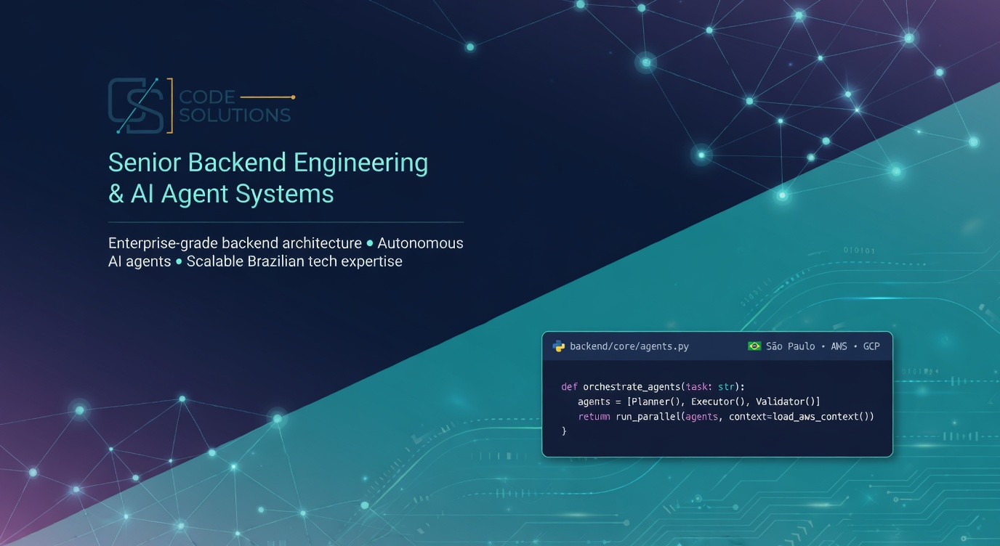
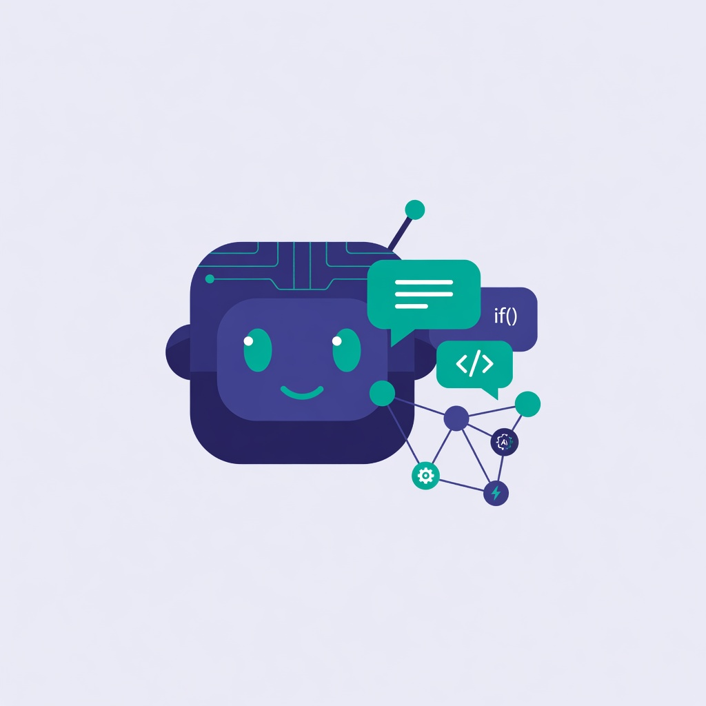

Engenheiro Backend sênior. Especialista em migrações críticas e agora também em agentes de IA profissionais e automações inteligentes entregáveis. Senior Backend Engineer. Specialist in legacy systems modernization and professional AI agents.

Olá, sou Ivã Martins. Engenheiro Backend Sênior com mais de 20 anos construindo e modernizando sistemas complexos, APIs de alto volume e integrações de larga escala.
Hi, I'm Ivã Martins. Senior Backend Engineer with over 20 years building and modernizing complex systems, high-volume APIs, and large-scale integrations.
Trabalhei extensivamente com Java (das versões iniciais até enterprise moderno), Play Framework, Python para dados e automação, Scala e arquiteturas event-driven com Flink + Kafka + Akka. Recentemente atuei com C#/.NET e Azure, incluindo features com IA em produção usando Claude e ChatGPT. Experiência também com Elasticsearch para busca, indexação e observability em plataformas de alto volume. No dia a dia utilizo Claude Code e outros assistentes de IA no terminal como aceleradores de refatoração, modernização de legados e criação de agentes — sempre combinados com revisão humana e julgamento de engenharia.
Extensive experience with Java (from early versions to modern enterprise), Play Framework, Python for data/automation, Scala and event-driven architectures with Flink + Kafka + Akka. More recently worked with C#/.NET and Azure, including production AI features using Claude and ChatGPT. Also experienced with Elasticsearch for search, indexing and observability in high-volume platforms. In day-to-day work I use Claude Code and other AI coding assistants in the terminal to speed up refactors, legacy modernization and agent development — always combined with human review and engineering judgment.
Projetos de que mais me orgulho: a modernização da plataforma de e-commerce da Panvel (Grupo Dimed), onde participei da reescrita completa do backend e liderei a criação da versão mobile e a implantação do Scrum, além da transformação arquitetural no Sicredi, que começou como um POC em Python e evoluiu para uma arquitetura orientada a eventos, tornando-se o padrão de toda a plataforma digital da instituição.
Projects I'm most proud of: the modernization of the Panvel (Grupo Dimed) e-commerce platform, where I participated in the complete backend rewrite and led the creation of the mobile version and the Scrum implementation, in addition to the architectural transformation at Sicredi, which started as a Python POC and evolved into an event-driven architecture, becoming the standard for the institution's entire digital platform.
Hoje os serviços são entregues através da Code Solutions (PJ), minha estrutura para prestação de serviços independentes. A expertise acima foi acumulada em posições CLT e consultoria externa em grandes instituições e agora é entregue através da Code Solutions.
Today services are delivered through Code Solutions (my independent consulting company), my structure for independent services. The expertise above was accumulated in CLT positions and external consulting at large institutions and is now delivered through Code Solutions.
A expertise que entrego hoje via Code Solutions é construída sobre esses e outros projetos de grande escala.
Atuei como Desenvolvedor Java e Scrum Master no projeto de modernização da plataforma de e-commerce. Liderei a implantação do Scrum e a criação da versão mobile, participei da reescrita completa do backend e das migrações de legado para JSF e de servidor WebSphere para JBoss.
Java Developer & Scrum Master on the e-commerce modernization project. Led Scrum adoption and the creation of the mobile e-commerce. Participated in the complete backend rewrite, legacy migration to JSF, and WebSphere to JBoss migration.
Atuei como consultor externo (outsourcing). Iniciei com um POC de crawler em Python para o PFM (Gestão Financeira Pessoal). Liderei a evolução completa para uma arquitetura orientada a eventos com Scala + Apache Flink + Kafka — solução que foi adotada como padrão para toda a plataforma digital da Sicredi.
Acted as an external consultant (outsourcing). Started with a Python crawler POC for PFM (Personal Finance Manager). Led the full evolution to an event-driven architecture with Scala + Apache Flink + Kafka — a solution adopted as the standard for Sicredi's entire digital platform.
Desenvolvi e mantive aplicações backend de alto volume com C# e Python em arquitetura Azure Functions. Implementei integrações assíncronas com Azure Service Bus e, principalmente, integrações avançadas com APIs de IA (Claude + ChatGPT) — usando intensamente Claude para automações e otimização de anúncios.
Developed and maintained high-volume backend applications in C# and Python on Azure Functions. Built async integrations with Service Bus and advanced AI API integrations (Claude + ChatGPT) — heavily using Claude for automations and ad optimization.
+ CIEE (plataforma de recrutamento de alto volume), Hospital Osvaldo Cruz (Horus Clinic), migrações de core bancário (FLEXCUBE) e mais de 15 anos de sistemas corporativos.
Reengenharia, migração de monolitos para microsserviços/event-driven e reescrita de backends críticos, preservando regras de negócio. Experiência em Java, Play Framework, Scala, Elasticsearch e arquiteturas enterprise.
Desenvolvimento de APIs de alto volume, microsserviços, integrações complexas com foco em performance, observabilidade e manutenibilidade.
Processamento em tempo real, pipelines de dados, mensageria confiável. Experiências que se tornaram padrão corporativo.
Azure Functions, Service Bus, AWS, funções serverless, sistemas de processamento assíncrono de grande escala.

Desenho e entrega de agentes e skills customizados para Grok, Claude e outros LLMs. Bots em canais (WhatsApp, etc), automações de workflow, agentes de pesquisa profunda, enriquecimento de dados e integração de IA em sistemas existentes.
Desenvolvimento contínuo, squads sob medida, revisão arquitetural, troubleshooting de integrações críticas e mentoria técnica em ambientes ágeis.
Não entrego apenas prompts. Entrego soluções completas e auto-contidas que seus times podem rodar, versionar e evoluir.
.grok/agents e .grok/skills dentro do próprio projeto) para gerar respostas naturais, seguras e no tom brasileiro. Listener leve em Node (Baileys) + chamada stateless do Grok CLI com cwd apontando para as definições locais. Totalmente entregável: clone → npm start → funciona. Deploy com PM2 ou systemd..grok/agents and .grok/skills in the project itself) to generate natural, safe, Brazilian-tone replies. Lightweight Node listener (Baileys) + stateless Grok CLI calls with cwd targeting local definitions. Fully deliverable: git clone → npm start. Production deploy with PM2 or systemd.Exemplos funcionais open source que demonstram na prática os stacks e serviços de modernização de legados, arquiteturas event-driven e agentes de IA.
Outros exemplos (study): scala-zio-task-api. Próximo: csharp-azure-ai-base (Azure + C# + IA para Quartile). • Todos os repositórios: github.com/ivamartins
Respondo propostas em até 48h. Prefiro escopos bem definidos com impacto claro.
Obrigado pelo contato. Responderei em até 48h.
Thank you for reaching out. I'll reply within 48h.